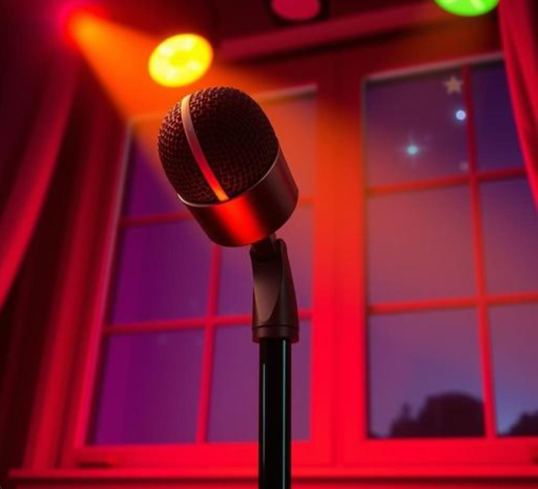

Every friend group has one. A specific karaoke performance — usually involving a song chosen with far more confidence than the vocal ability actually supported — that has achieved permanent legendary status, referenced in the group chat years later with nothing more than a single emoji or a screenshot that needs zero explanation among the people who were there.

Why Karaoke Disasters Become Permanent Group Lore
Social psychologists studying group bonding note that shared embarrassing moments, witnessed collectively, tend to become unusually durable social glue — precisely because the embarrassment was experienced together rather than alone, transforming what would otherwise be a private humiliation into a shared, affectionately-referenced group memory instead. The original mortification fades. The shared retelling, somehow, never does.
The Universal Categories of Legendary Karaoke Moments
- The wildly overambitious song choice, attempted with full commitment despite an obvious mismatch in vocal range
- The complete lyric forgetting, mid-performance, in front of an unforgiving crowd of friends who will never let it go
- The surprise hidden talent, when someone nobody expected turns out to be genuinely great, which is somehow its own kind of legendary moment
- The group performance that fell apart in real time, everyone singing a different part of the song simultaneously, no one fully in sync
Why These Memories Deserve Better Than Just Living in the Group Chat
The group chat is a notoriously unreliable long-term archive — buried under years of newer messages, lost in app migrations, occasionally wiped entirely when someone's phone dies at the wrong moment. The legendary karaoke moment, told and retold for years, deserves a more permanent home than a screenshot nobody can easily find anymore.
Giving the Disaster Its Proper Permanent Tribute
Some friend groups have started marking their group's specific karaoke legend with a star on GalaxySpace — named after the song, the performer, or whatever nickname the incident earned afterward — with the actual story preserved permanently, group-chat-proof.
You can create one here — a fitting, permanent tribute to the night someone definitely should not have chosen that song.